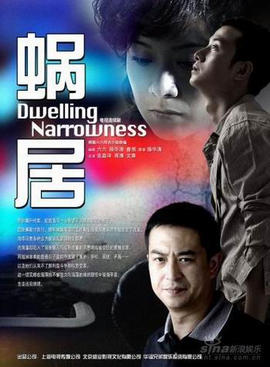

苏淳偷借高利贷的事被揭穿后，小贝把他拉回家谈心。小贝说，以你们的情况，现实一点就该租房。苏淳说，那不是现实，是理智；现实是这世上的风气让所有人都对房子疯狂，海萍也逃不掉。然后他说了一句全剧最让人心惊的话：男人是铜，女人是锈，最终女人的颜色会把男人全部覆盖。
小贝无言以对。观众大概也是。这句话初听像是一个窝囊丈夫的牢骚，把责任推给老婆；再听，却是一个男人对自己被磨损的诚实记录。他没有说锈是坏的，他说的是：我已经看不出自己本来的颜色了。
一个没出息的人
《蜗居》里的苏淳，是被骂得最多的男人。
海萍骂他没出息：为什么不爱好挣钱和创业，大男人对家的贡献根本不多。海萍骂他抽烟：自己成天省吃俭用，他还要浪费钱。他偷藏的烟被搜出来，从窗口扔下去，他连忙跑下楼去捡。为了全勤奖，他把海萍送上回老家的公车就匆匆赶去上班；国庆回自己老家，被海萍抱怨偏心，只想着自己的父母。天天吃挂面配榨菜，他终于抗议：要吃也吃方便面，起码红烧牛肉面里还能看见肉星。海萍笑他没出息。
他也确实做过一件糟糕的事。海萍逼他回家问父母要钱凑首付，他在单位打了长途电话，回来说父母答应了，六万块马上到。直到房款交了，海萍开始规划装修，他才在忐忑里说出真相：那六万块不是爸妈的，是他借的高利贷。
这是一个典型的、软弱者的谎。他没有勇气对妻子说“我家拿不出来”，也没有勇气对父母开口，于是选了一条看起来谁都不用失望的路，把失望推迟到了更大的时候。海萍那一夜哭着跑出家门，说要离婚。
弄堂口的那位大哥
可是剧作者很早就给了苏淳一个转机，而且是从一个最不起眼的地方来的。
自行车被偷的那晚，海萍把积攒很久的怒火全倒在他身上，他夺门而出，在黑夜的弄堂里漫无目的地走。报摊边碰到一个邻居大哥，看样子也是跟老婆吵了架出来散心的。两个同病相怜的男人聊起来。苏淳吐苦水：在婚姻的现实里，自己所有的优越感都被慢慢磨光了，为了融进这个大城市，他好像被锁在了压力和辛苦里面。
邻居大哥却从老婆的角度说：一个女人从花样的年华陪你到容颜憔悴，却没享受到什么，那么发一点脾气，也是你应该承受的——这就是去爱她。
苏淳听了，觉得感动，也宽了心，两个人说说笑笑地各自回家。
这段戏在全剧里只有两三分钟，却是我认为《蜗居》说过的最接近福音的一句话。它没有劝女人温柔一点，它劝男人去承受。新约里写给丈夫的那一节，也是这个方向：“你们作丈夫的，要爱你们的妻子，正如基督爱教会，为教会舍己。”（以弗所书 5:25）爱的样式不是讲理，不是计较谁的贡献多，是把对方的怒气接过来，像接一件本来就该由你背的行李。苏淳后来的转变，就是从这天晚上开始的。
素菜与肥牛
苏淳最可爱的地方，是他在穷日子里还能找到味道。海萍为房子奔波了一天，精疲力竭地回家，他包饺子慰劳她。两个人从房子聊到社会，聊到女儿的将来，感叹生活怎么这么难。苏淳自我安慰：能吃得起饺子的生活，还不算落后。
这句话的分量，要放在整部剧里才看得出来。宋思明在高级饭店里请海藻喝一碗“山药羹”，汤是鲍鱼鱼翅熬的；宋太太在家具店的橱窗前站了很久，终究没舍得进去；海藻的公寓里摆满欧式家具，她一个人对着长夜。全剧那么多山珍海味，只有苏淳的一盘饺子是热的。
箴言里有一句老话：“吃素菜，彼此相爱，强如吃肥牛，彼此相恨。”（箴言 15:17）苏淳没读过，可他活出来了。他的“没出息”，有一部分恰恰是一种拒绝：他不肯把每一顿饭都换算成半平米房子。海萍说文学是鱼上的香菜，苏淳大概会说，有饺子吃，鱼可以先不要。
一尊金佛
苏淳真正站起来，是在他最莫名其妙的时候。
他因为替人画图接私活，被单位以泄露机密的罪名送进了看守所。他不知道，是宋思明请来了大律师，又去动员船厂撤诉，顺手促成了两家船厂合营。他被取保，坐立不安地等了一个月，撤案通知来了，船厂领导还提着礼物上门，说他有远见，要全厂表扬他。他回到单位，竟然被提拔，有了自己的办公室。传闻说，他是张市长的七弟。
于是每天都有人请他吃饭。人事科长想升职，又请吃饭又送礼，他回家打开礼盒，里面是一尊金佛。有一回他喝醉了，醒来发现自己躺在按摩房里，旁边的小姐衣着暴露，自己衣不蔽体，吓得落荒而逃。第二天早上他赖在床上不肯去上班，对海萍说：再这么下去，早晚要失身。
剧作者在这里写得很妙。一个被捧上去的小人物，面对的诱惑不是一次大贪污，是一桌又一桌的饭局，一份又一份的“心意”。他不需要做什么坏事，只需要接受。而苏淳的本能，是逃。
旧约里约瑟被主人的妻子拉住衣裳，“约瑟把衣裳丢在妇人手里，跑到外边去了”（创世记 39:12）。苏淳从按摩房落荒而逃的样子不太体面，却是同一种智慧：有些试探不是用来斗争的，是用来逃跑的。
然后是那尊金佛。苏淳决定辞职，去网上开一家卖儿童书的小店。海萍大发雷霆，可是那天晚上他解释了：他辞职，是想离宋思明远一点。他有不好的预感，不想一家人都陷进去。这样，他也终于可以堂堂正正地把那尊金佛还回去了。
全剧那么多聪明人，只有这个“没出息”的人嗅到了焦糊味。海萍感激宋思明救了丈夫，请他吃饭；海藻说宋思明总能变出解决的办法；可苏淳看着那份从天而降的体面，第一个念头是退。一个人手里捧着一尊金子做的像，想的是还回去——这几乎是一个寓言。“小子们哪，你们要自守，远避偶像！”（约翰一书 5:21）这座城里的人都在给自己造金像，房子，权力，名分；苏淳把他手里那一尊，原样退了回去。
锈与财宝
回到那句话：男人是铜，女人是锈。
苏淳说这话的时候，是在怪罪。可是在剧终，他对海萍说的是另一番话：新房终于收拾好了，回头看这么多年走过的路，他特别感谢海萍对自己的不离不弃，感谢她对这个家的付出。那个曾经觉得自己被锈覆盖的男人，最后感谢的，恰恰是那层锈。
他大概明白了，锈不是海萍的颜色，是这座城市的颜色。耶稣说：“不要为自己积攒财宝在地上，地上有虫子咬，能锈坏，也有贼挖窟窿来偷；只要积攒财宝在天上……因为你的财宝在哪里，你的心也在哪里。”（马太福音 6:19–21）锈蚀的从来不是男人或女人，是人把心放进去的那些东西：房子、首付、全勤奖、一尊金佛。心放在哪里，锈就长在哪里。
苏淳不是一个圣人。他撒过谎，抽烟，逃避，被老婆追着骂了三十五集。可他在剧中几次关键的时刻，都选择了更小的那一份：一盘饺子而不是鲍鱼汤，一家网店而不是一间办公室，一个平安的家而不是市长七弟的名头。他说要把那家小店当成后半生的事业，慢慢做大。
这样的人在《蜗居》里不起眼，在福音书里却很眼熟。那位主人对一个只管了几千银子的仆人说：“好，你这又良善又忠心的仆人，你在不多的事上有忠心，我要把许多事派你管理。”（马太福音 25:21）苏淳一生大概只会在不多的事上有忠心。但在一座人人都想要更多的城里，这已经是一种稀有的颜色：一块没有被锈完全盖住的铜。
《蜗居》系列影评之二：苏淳篇。总论见《活在这个城市的成本》。